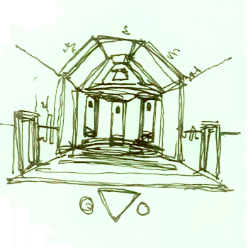

Down the stairs is another hallway. It looks very similar to the one upstairs, but it feels strangely warm down here. All of the doors on the sides of the hallway are locked, but at the other end of the room is a little narrow alcove with three doors, red, yellow, blue. I’ve never been down here. It feels strangely alive, like they never shut it down.